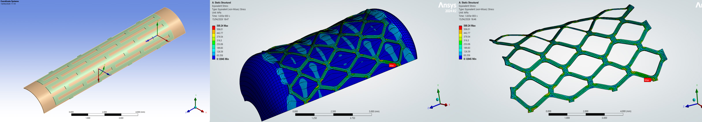
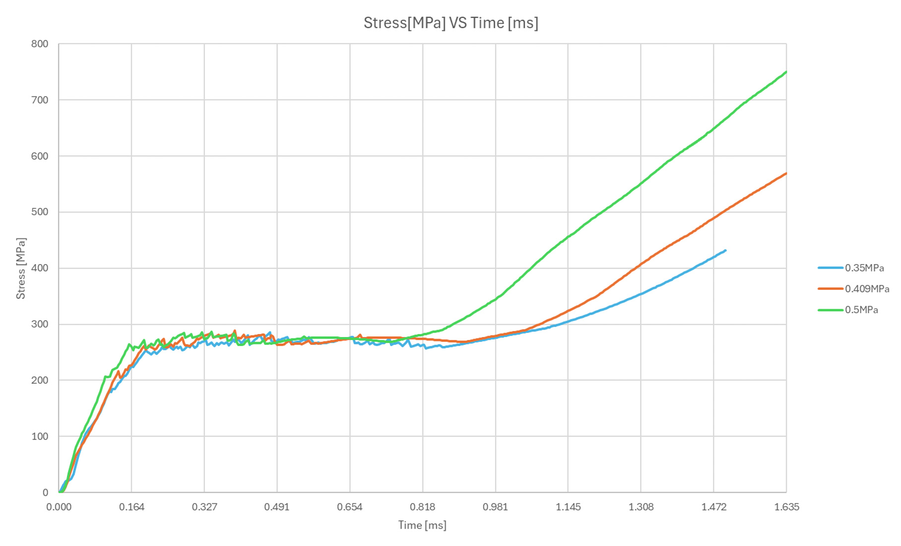
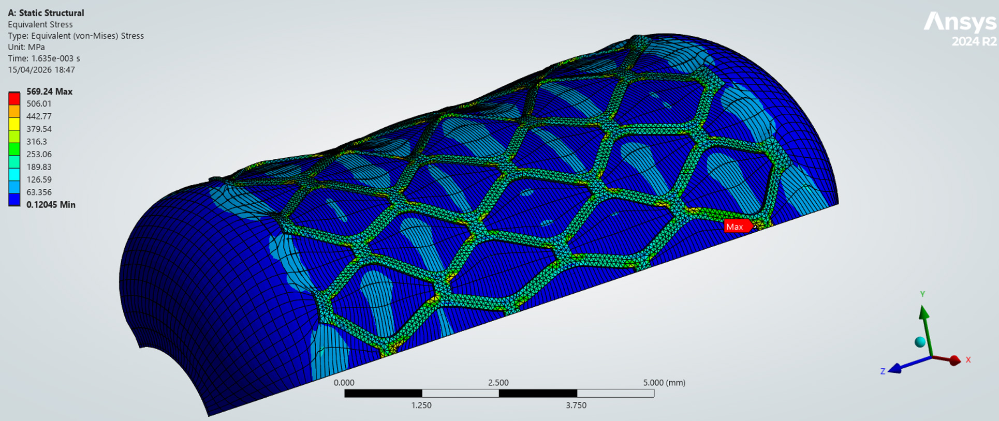
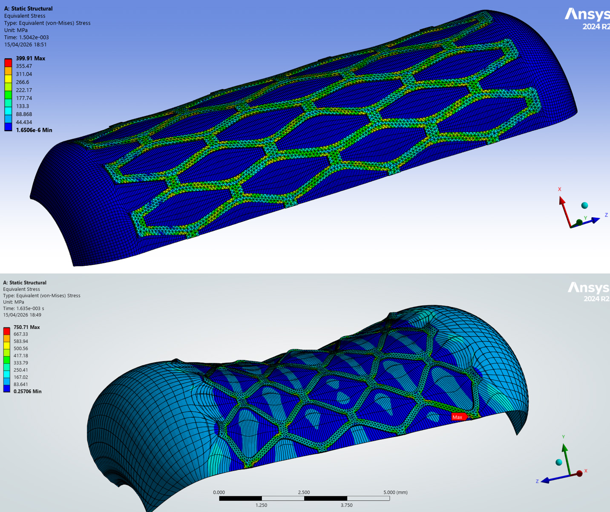

A highly nonlinear finite element study in ANSYS Mechanical investigating the kinematic expansion and plastic deformation of a cardiovascular stent under balloon inflation — validated against published literature (Chua et al.).

Three simultaneous nonlinearities
The balloon uses a Mooney-Rivlin hyperelastic model (C₁₀ = 1.069 MPa, C₀₁ = 0.711 MPa) to capture large-strain rubber-like behaviour. The SS304 stent uses bilinear isotropic hardening (E = 193 GPa, σ_y = 207 MPa, E_t = 692 MPa). Frictional surface-to-surface contact couples the two bodies. Internal balloon pressure ramps linearly from 0 to the target value over 1.635 ms, replicating the Chua et al. deployment protocol.
At low pressures the balloon inflates and the stent responds elastically. All three pressure cases share a nearly identical stress trajectory — rapidly reaching ~270–280 MPa within the first 0.2 ms, dominated by elastic deformation with local yielding just initiating at cell corners.
After a short plateau, the three curves diverge sharply at ~0.8 ms. Once corner stress exceeds 207 MPa, plastic hinges form and the stent expands rapidly. Higher pressure drives a disproportionately larger stress jump and wider plastic zones through the strut network.
My contribution to the group project included building the full stent geometry and the 1/4-symmetry model in SolidWorks before importing into ANSYS.
The complete stent was drawn in SolidWorks following the diamond-cell geometry specified in Chua et al., with uniform strut width and thickness. The geometry was parameterised for dimensional consistency before export.
Exploiting the two planes of symmetry in the stent–balloon assembly, a quarter-model was cut in SolidWorks and exported to ANSYS. This reduced the node count significantly while maintaining accurate prediction of stress distribution and radial expansion.
Parametric study across three inflation pressures: 0.35 MPa, 0.409 MPa, and 0.50 MPa. Pressure applied as a linear ramp over 1.635 ms in all cases.

In the early stage of loading, all three curves follow a very similar trend, with stress rising rapidly and reaching approximately 270–280 MPa within the first 0.2 ms — dominated by elastic deformation with local yielding initiating at the cell corners.
After a short plateau, the curves begin to separate clearly at around 0.8 ms. The response becomes strongly nonlinear, with stress increasing much more rapidly in the higher-pressure cases.
Peak von Mises stress at end of loading
A relatively small increase in applied pressure yields a disproportionately large increase in stress once plastic deformation has spread through the stent structure.

0.409 MPa — Balanced deployment
A larger radial expansion is obtained and the stent cells open clearly, accompanied by noticeable axial foreshortening. The stress distribution becomes more widespread, with plastic zones extending further from the corner regions into the connecting struts. This case represents a balanced deployment condition — substantial expansion while the stress level, although significantly above yield (207 MPa), remains below the extreme values reached at 0.5 MPa.

0.35 MPa — Under-expanded
The stent expands only moderately and the balloon remains nearly cylindrical. Stress is mainly concentrated at the hinges and junctions of the diamond cells — pressure is insufficient to drive more extensive deployment of the strut network.
0.50 MPa — Over-pressurised
Largest expansion, but at the cost of a very pronounced stress increase. High plastic deformation spreads across the strut network and the balloon ends exhibit a more pronounced dog-boning effect — further radial gain becomes structurally inefficient, with a much stronger rise in local stress.
"This project gave me hands-on experience with the most demanding class of engineering simulation: problems where geometry, material, and boundary conditions all change simultaneously and nonlinearly. Designing and drawing the stent geometry in SolidWorks — including the 1/4-symmetry simplification — and then running the parametric pressure study built a complete end-to-end understanding of how CAD decisions directly affect simulation accuracy and result interpretation. Quantifying the nonlinear trade-off between deployment pressure, expansion gain, and structural stress showed me how FEA connects directly to real clinical engineering decisions."
SolidWorks CAD
Full stent & 1/4 symmetry model
ANSYS Mechanical
Implicit quasi-static solver
Nonlinear FEA
Large deformation · Plasticity
Contact Mechanics
Frictional surface-to-surface
Hyperelasticity
Mooney-Rivlin balloon model
Parametric Study
3 pressure levels compared
Post-Processing
Stress contours · Time histories
Technical Writing
Advanced FEA Report, DCU 2026